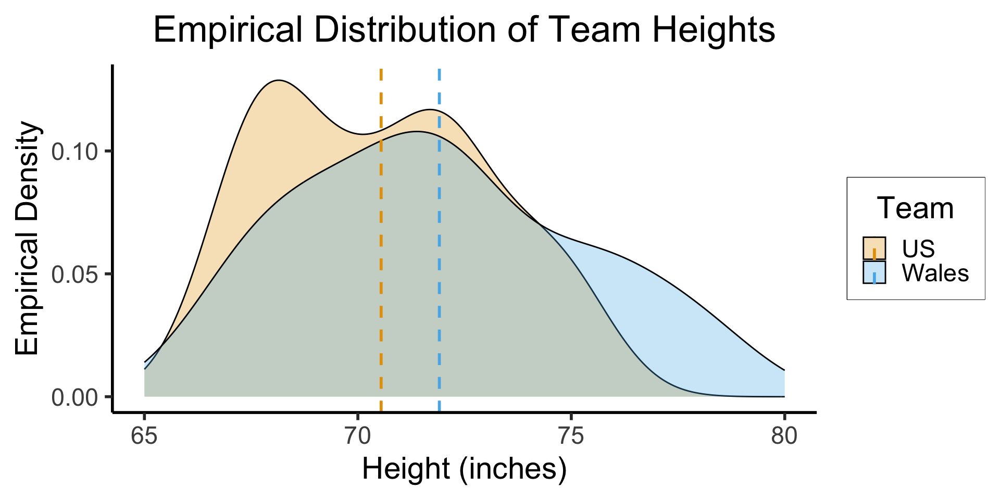
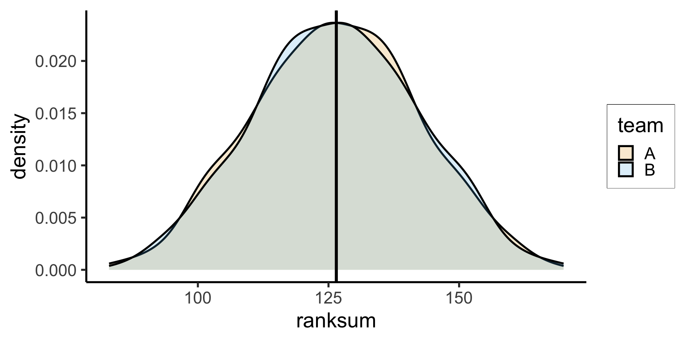

Code
source("../_globals.r")DSAN 5100: Probabilistic Modeling and Statistical Computing
Sections 01-04 (Combined Session)
source("../_globals.r")\[ \DeclareMathOperator*{\argmax}{argmax} \DeclareMathOperator*{\argmin}{argmin} \newcommand{\bigexp}[1]{\exp\mkern-4mu\left[ #1 \right]} \newcommand{\bigexpect}[1]{\mathbb{E}\mkern-4mu \left[ #1 \right]} \newcommand{\convergesAS}{\overset{\text{a.s.}}{\longrightarrow}} \newcommand{\definedas}{\overset{\text{def}}{=}} \newcommand{\definedalign}{\overset{\phantom{\text{def}}}{=}} \newcommand{\eqeventual}{\overset{\mathclap{\text{\small{eventually}}}}{=}} \newcommand{\Err}{\text{Err}} \newcommand{\expect}[1]{\mathbb{E}[#1]} \newcommand{\expectsq}[1]{\mathbb{E}^2[#1]} \newcommand{\fw}[1]{\texttt{#1}} \newcommand{\given}{\mid} \newcommand{\green}[1]{\color{green}{#1}} \newcommand{\heads}{\outcome{heads}} \newcommand{\iid}{\overset{\text{\small{iid}}}{\sim}} \newcommand{\lik}{\mathcal{L}} \newcommand{\loglik}{\ell} \newcommand{\mle}{\textsf{ML}} \newcommand{\nimplies}{\;\not\!\!\!\!\implies} \newcommand{\orange}[1]{\color{orange}{#1}} \newcommand{\outcome}[1]{\textsf{#1}} \newcommand{\param}[1]{{\color{purple} #1}} \newcommand{\pgsamplespace}{\{\green{1},\green{2},\green{3},\purp{4},\purp{5},\purp{6}\}} \newcommand{\prob}[1]{P\left( #1 \right)} \newcommand{\purp}[1]{\color{purple}{#1}} \newcommand{\sign}{\text{Sign}} \newcommand{\spacecap}{\; \cap \;} \newcommand{\spacewedge}{\; \wedge \;} \newcommand{\tails}{\outcome{tails}} \newcommand{\Var}[1]{\text{Var}[#1]} \newcommand{\bigVar}[1]{\text{Var}\mkern-4mu \left[ #1 \right]} \]
Today’s Planned Schedule:
| Start | End | Topic | Recording | |
|---|---|---|---|---|
| Lecture | 12:30pm | 1:30pm | Guest Speaker! Dr. Kerrie Carfagno | |
| 1:30pm | 2:00pm | Non-Parametric Analysis → | ||
| Break! | 2:00pm | 2:10pm | ||
| 2:10pm | 3:00pm | Non-Parametric Methods Lab → |
Kerrie Carfagno is the Program Director for Georgetown’s MS Program in Environment and Sustainability Management.
Dr. Carfagno has taught sustainable business and management communication courses with an emphasis on communication strategy, change management, leadership, ethics, and data visualization for more than 15 years.
Carfagno is particularly interested in the financial and ethical impact of climate change on businesses at the industry, corporate, and societal levels. She focuses on how leaders can effectively communicate climate risk (and opportunity) to increase profitability, resiliency, and sustainability.
She employed these concepts in her global sustainability elective courses and her study abroad courses to Scandinavia in partnership with DIS. Carfagno is also a senior fellow at Generation 180, a non-profit org working to inspire and equip people to take action on clean energy.

Recall that any other distribution implicitly encodes additional assumptions, e.g., that the datapoints lie within some bounded range, or have all nonnegative values, etc.
| Type of Distribution | + | Parameter Values | = | All Possible Info (MGF) |
|---|---|---|---|---|
| Normal \(\mathcal{N}(\mu, \sigma^2)\) | + | \(\mu = m\), \(\sigma^2 = s\) | = | \(M_t(X) = \exp[mt + s^2t^2/2]\) |
| Uniform \(\mathcal{U}(\alpha,\beta)\) | + | \(\alpha = a\), \(\beta = b\) | = | \(M_t(X) = \frac{e^{tb} - e^{ta}}{t(b-a)}\) |
| Poisson \(\mathcal{P}(\lambda)\) | + | \(\lambda = \ell\) | = | \(M_t(X) = \exp[\ell(e^t - 1)]\) |
\[ \text{Sign}(x) = \begin{cases}\phantom{-}1 &\text{if } x > 0 \\ \phantom{-}0 &\text{if }x = 0 \\ -1 &\text{if }x < 0\end{cases} \]
\[ \begin{align*} \sum_{i=1}^N \sign(X_i - Y_i) &= \sign(15 - (-3)) + \sign(7-4) + \sign(11-1) + \sign(3-4) \\ &= 1 + 1 + 1 + -1 = 2 \end{align*} \]
\[ \text{GT}_i(X_i, Y_i) = \text{Sign}(X_{i} - Y_{i}) = \begin{cases} \phantom{-}1 &\text{if }X_{i} > Y_{i}, \\ \phantom{-}0 &\text{if }X_{i} = Y_{i}, \\ -1 &\text{if }X_{i} < Y_{i} \end{cases} \]
We can then sum each pair’s score into an aggregate score:
\[ \text{GT}(\mathbf{X}, \mathbf{Y}) = \sum_{i=1}^NGT_i(X_i,Y_i) \]
such that if \(\chi\) and \(\psi\) are in fact the same population, we expect \(GT(\mathbf{X}, \mathbf{Y}) = 0\) (positive and negative values of \(GT_i\) cancel each other out, for sufficiently large \(N\))
Non-parametric tests which use this value as a test statistic are called Sign tests
| \(X_i\) | \(Y_j\) | \(>\) | \(=\) | \(<\) |
|---|---|---|---|---|
| 5 | 7 | +1 | ||
| 5 | 6 | +1 | ||
| 9 | 7 | +1 | ||
| 9 | 6 | +1 | ||
| 7 | 7 | +0.5 | ||
| 7 | 6 | +1 | ||
| Final | Score: | \(S_{\mathbf{X}} = 3.5\) | \(S_{\mathbf{Y}} = 2.5\) |
| Values | \(5_X\) | \(6_Y\) | \(7_X\) | \(7_Y\) | \(9_X\) | |
| Rank in \(\mathbf{X}\) | \([1]_{X/\mathbf{X}}\) | \([2]_{X/\mathbf{X}}\) | \([3]_{X/\mathbf{X}}\) | \(\Sigma_{X/\mathbf{X}} = [6]\) | ||
| Rank in \(\mathbf{Y}\) | \([1]_{Y/\mathbf{Y}}\) | \([2]_{Y/\mathbf{Y}}\) | \(\Sigma_{Y/\mathbf{Y}} = [3]\) | |||
| Rank in \(\mathbf{Z}\) | \([1]_{X/\mathbf{Z}}\) | \([2]_{Y/\mathbf{Z}}\) |
\([3.5]_{X/\mathbf{Z}}\) | \([3.5]_{Y/\mathbf{Z}}\) |
\([5]_{X/\mathbf{Z}}\) | \(\Sigma_{X/\mathbf{Z}} = [9.5]\) \(\Sigma_{Y/\mathbf{Z}} = [5.5]\) |
| Wales | 78 | 71 | 76 | 75 | 72 | 70 | 68 | 72 | 69 | 73 | 67 | \(\overline{X} \approx 71.91\) |
| USA | 75 | 68 | 74 | 68 | 68 | 70 | 72 | 67 | 72 | 72 | 70 | \(\overline{Y} \approx 70.55\) |
library(tidyverse)── Attaching core tidyverse packages ──────────────────────── tidyverse 2.0.0 ──
✔ dplyr 1.1.2 ✔ readr 2.1.4
✔ forcats 1.0.0 ✔ stringr 1.5.0
✔ lubridate 1.9.2 ✔ tibble 3.2.1
✔ purrr 1.0.2 ✔ tidyr 1.3.0
── Conflicts ────────────────────────────────────────── tidyverse_conflicts() ──
✖ dplyr::filter() masks stats::filter()
✖ dplyr::lag() masks stats::lag()
ℹ Use the conflicted package (<http://conflicted.r-lib.org/>) to force all conflicts to become errorsus_heights <- tibble(height=c(75, 68, 74, 68, 68, 70, 72, 67, 72, 72, 70))
# Go metric! Oh well
#us_heights <- tibble(height=c(190.5, 172.7, 188, 172.7, 172.7, 177.8, 182.9, 170.2, 182.9, 182.9, 177.8)
mean_us <- mean(us_heights$height)
#print(mean_us)
us_heights <- us_heights |> mutate(Team = "US")
wales_heights <- tibble(height=c(78, 71, 76, 75, 72, 70, 68, 72, 69, 73, 67))
mean_wales <- mean(wales_heights$height)
#print(mean_wales)
mean_df <- tibble(mean_height = c(mean_us, mean_wales), Team = c("US", "Wales"))
wales_heights <- wales_heights |> mutate(Team = "Wales")
players = bind_rows(us_heights, wales_heights)
ggplot(players, aes(x=height, fill=Team)) +
geom_density(
alpha=0.3, adjust=4/5
) +
geom_vline(
data=mean_df,
aes(xintercept=mean_height, color=Team),
linetype = "dashed",
linewidth = g_linewidth
) +
xlim(c(65,80)) +
dsan_theme("half") +
scale_fill_manual(values=c(cbPalette[1], cbPalette[2])) +
labs(
title = "Empirical Distribution of Team Heights",
x = "Height (inches)",
y = "Empirical Density"
)
| Original Data | Sorted Total Samples | Rank | |||
|---|---|---|---|---|---|
| USA | Wales | USA | Wales | USA | Wales |
| 75 | 78 | 67 | 67 | 1.5 | 1.5 |
| 68 | 71 | 68 | 68 | 4.5 | 4.5 |
| 74 | 76 | 68 | 4.5 | ||
| 68 | 75 | 68 | 4.5 | ||
| 68 | 72 | 69 | 7 | ||
| 70 | 70 | 70 | 70 | 9 | 9 |
| 72 | 68 | 70 | 9 | ||
| 67 | 72 | 71 | 11 | ||
| 72 | 69 | 72 | 72 | 14 | 14 |
| 72 | 73 | 72 | 14 | ||
| 72 | 14 | ||||
| 72 | 73 | 72 | 14 | ||
| 73 | 17 | ||||
| 74 | 18 | ||||
| 75 | 75 | 19.5 | 19.5 | ||
| 76 | 21 | ||||
| 78 | 22 | ||||
\[ \sum_{i=1}^{N}i = \underbrace{\overbrace{(1 + N)}^{N + 1} + \overbrace{(2 + (N-1))}^{N + 1} + \cdots}_{N/2\text{ terms}} = \frac{N(N+1)}{2} \]
\[ \Sigma_{X/\mathbf{X}} = \Sigma_{Y/\mathbf{Y}} = \sum_{i=1}^{11}i = \frac{11(12)}{2} = 66 \]
\[ \begin{align*} U_X &= 112.5 - 66 = 46.5, \; U_Y = 140.5 - 66 = 74.5 \\ U &= \min\{U_X, U_Y\} = \min\{46.5, 74.5\} = 46.5 \end{align*} \]
library(tidyverse)
N1 <- 11
N2 <- 11
N <- N1 + N2
totalRankSum <- (N * (N+1)) / 2
writeLines(paste0("N1 = ",N1,", N2 = ",N2," => Sum(1...(N1+N2)) = ",totalRankSum))N1 = 11, N2 = 11 => Sum(1...(N1+N2)) = 253s_1 <- runif(N1)
df_1 <- tibble(x = s_1, team = "A")
s_2 <- runif(N2)
df_2 <- tibble(x = s_2, team = "B")
df_combined <- bind_rows(df_1, df_2)
df_combined['rank'] <- rank(df_combined$x)
df_combined |> arrange(rank) |> head()# A tibble: 6 × 3
x team rank
<dbl> <chr> <dbl>
1 0.0282 B 1
2 0.0282 A 2
3 0.0731 B 3
4 0.134 B 4
5 0.135 B 5
6 0.186 A 6df_combined |> group_by(team) |> summarize(ranksum = sum(rank)) |> mutate(proportion = ranksum / totalRankSum)# A tibble: 2 × 3
team ranksum proportion
<chr> <dbl> <dbl>
1 A 144 0.569
2 B 109 0.431simulate_ranksums <- function(N1, N2) {
N <- N1 + N2
totalRankSum <- (N * (N+1)) / 2
s_1 <- runif(N1)
df_1 <- tibble(x = s_1, team = "A")
s_2 <- runif(N2)
df_2 <- tibble(x = s_2, team = "B")
df_combined <- bind_rows(df_1, df_2)
df_combined['rank'] <- rank(df_combined$x)
ranksum_df <- df_combined |> group_by(team) |> summarize(ranksum = sum(rank))
return(ranksum_df$ranksum)
}
num_sims <- 1000
results <- replicate(num_sims, simulate_ranksums(11,11))
t(results[,0:10]) [,1] [,2]
[1,] 133 120
[2,] 98 155
[3,] 115 138
[4,] 166 87
[5,] 137 116
[6,] 140 113
[7,] 146 107
[8,] 157 96
[9,] 119 134
[10,] 106 147rowMeans(results)[1] 126.407 126.593ranksum_A <- tibble(ranksum=results[1,], team="A")
ranksum_A_mean <- mean(ranksum_A$ranksum)
ranksum_B <- tibble(ranksum=results[2,], team="B")
ranksum_B_mean <- mean(ranksum_B$ranksum)
mean_df <- tibble(mean_value = c(ranksum_A_mean, ranksum_B_mean), team=c("A","B"))
sim_df <- bind_rows(ranksum_A, ranksum_B)
ggplot(sim_df, aes(x=ranksum, fill=team)) +
geom_density(linewidth = g_linewidth, alpha=0.2) +
geom_vline(
data=mean_df,
aes(xintercept = mean_value),
linewidth = g_linewidth
) +
dsan_theme("half") +
scale_fill_manual(values=c(cbPalette[1], cbPalette[2]))
wilcox.test(height ~ Team, data=players, exact = TRUE)Warning in wilcox.test.default(x = DATA[[1L]], y = DATA[[2L]], ...): cannot
compute exact p-value with ties
Wilcoxon rank sum test with continuity correction
data: height by Team
W = 46.5, p-value = 0.3705
alternative hypothesis: true location shift is not equal to 0